React (Rest API) Projelerim

Yemek Sipariş Uygulaması
Projenin Amacı : Kullanıcıların 100 farklı yemek seçeneğini inceleyebilmesini, ürünler hakkında bilgi alabilmesini ve kolayca sipariş oluşturabilmesini sağlayan bir uygulama geliştirmek.
Kullanılan Teknolojiler : React bileşenleri, Hook'lar, Fetch API, Async / Await, REST API
Görüntülenebilir Cihaz Uyumluluğu : Tüm Cihazlar (Responsive)
React Projelerim

Kuaför Randevu Sistemi
Projenin Amacı : Müşterilerin çevrim içi randevu oluşturabildiği, personel ve yönetici işlemlerinin yönetilebildiği bir kuaför randevu sistemi geliştirmek.
Kullanılan Teknolojiler : HTML, CSS3 (Flex), React (fonksiyonel bileşenler + Hooks), react-router-dom (BrowserRouter, ProtectedRoute), react-hook-form, react-toastify, localStorage (özel storage.js sarmalayıcı), JWT, CSS custom properties (design tokens) ile tema yönetimi
Görüntülenebilir Cihaz Uyumluluğu : Tüm Cihazlar (Responsive)

Görev Takip Uygulaması
Projenin Amacı : Kullanıcıların görev oluşturmasını, mevcut görevlerini takip etmesini ve API üzerinden sunulan görevleri görüntülemesini sağlayan bir uygulama geliştirmek.
Kullanılan Teknolojiler : HTML, CSS3 (Flex), React
Görüntülenebilir Cihaz Uyumluluğu : Tüm Cihazlar (Responsive)
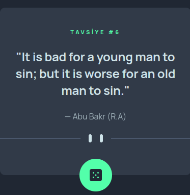
Alıntı Oluşturma Uygulaması
Projenin Amacı : Kullanıcılara farklı yazarların sözlerini ve alıntılarını sunarak rastgele alıntılar görüntüleyebilecekleri bir uygulama geliştirmek.
Kullanılan Teknolojiler : HTML, CSS3 (Flex), React
Görüntülenebilir Cihaz Uyumluluğu : Tüm Cihazlar (Responsive)
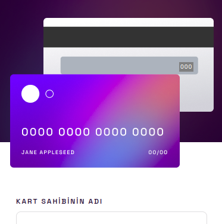
İnteraktif Kart Detay Formu
Projenin Amacı : Kullanıcıların kredi kartı bilgilerini forma girdiklerinde kart üzerindeki bilgilerin eş zamanlı olarak görsel biçimde güncellenmesini sağlamak.
Kullanılan Teknolojiler : HTML, CSS3 (Flex), React
Görüntülenebilir Cihaz Uyumluluğu : Tüm Cihazlar (Responsive)

Bahşiş Hesaplama Uygulaması
Projenin Amacı : Hesap tutarı ve bahşiş oranına göre toplam ödeme miktarını ve kişi başına düşen tutarı hesaplamayı sağlayan bir uygulama geliştirmek.
Kullanılan Teknolojiler : HTML, CSS3 (Flex,Grid), React
Görüntülenebilir Cihaz Uyumluluğu : Tüm Cihazlar (Responsive)

Kredi - İpotek Hesaplama Uygulaması
Projenin Amacı : Kullanıcıların kredi tutarı, faiz oranı ve vade bilgilerine göre ödeme planını ve tahmini taksit tutarlarını hesaplayabilmesini sağlamak.
Kullanılan Teknolojiler : HTML, CSS3 (Flex), React
Görüntülenebilir Cihaz Uyumluluğu : Tüm Cihazlar (Responsive)
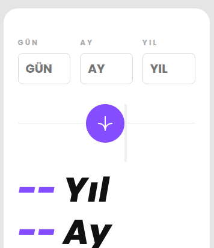

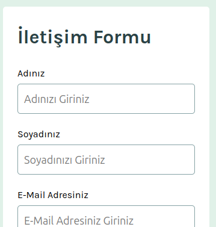
JavaScript Projelerim | Front-End Okulu Eğitim Sürecinde
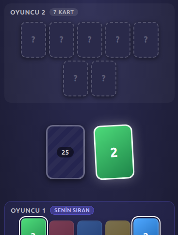

Ön Muhasebe Uygulaması
Projenin Amacı : Gelir ve gider kayıtlarının oluşturulmasını, finansal hareketlerin takip edilmesini ve temel ön muhasebe işlemlerinin yönetilmesini sağlayan bir uygulama geliştirmek.
Kullanılan Teknolojiler : HTML, CSS3 (Flex,Grid), JavaScript (ES6)
Görüntülenebilir Cihaz Uyumluluğu : Tüm Cihazlar (Responsive)

Alışveriş Uygulaması
Projenin Amacı : Kullanıcıların ürünleri görüntüleyebildiği, alışveriş listesi oluşturabildiği ve alışveriş işlemlerini yönetebildiği bir uygulama geliştirmek.
Kullanılan Teknolojiler : HTML, CSS3 (Flex), JavaScript (ES6)
Görüntülenebilir Cihaz Uyumluluğu : Tüm Cihazlar (Responsive)
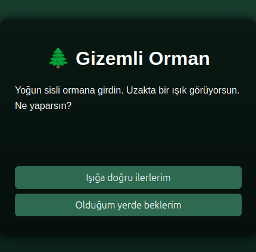
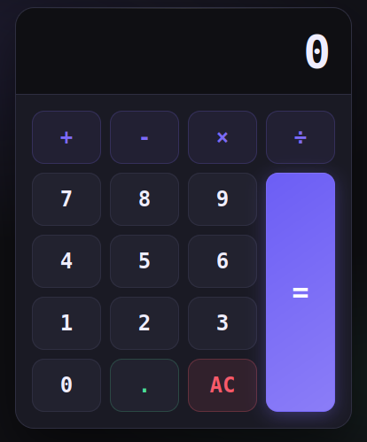
Hesap Makinası
Projenin Amacı : Kullanıcıların temel matematiksel işlemleri hızlı ve kolay bir şekilde gerçekleştirebilmesini sağlayan bir hesaplama aracı geliştirmek.
Kullanılan Teknolojiler : HTML, CSS3 (Flex,Grid), JavaScript (ES6)
Görüntülenebilir Cihaz Uyumluluğu : Tüm Cihazlar (Responsive)


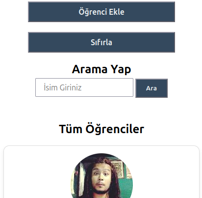
Öğrenci Otomasyonu
Projenin Amacı : Öğrenci bilgilerinin görüntülenmesini ve temel öğrenci yönetim işlemlerinin gerçekleştirilebilmesini sağlayan bir uygulama geliştirmek.
Kullanılan Teknolojiler : HTML, CSS3 (Flex), JavaScript (ES6)
Görüntülenebilir Cihaz Uyumluluğu : Tüm Cihazlar (Responsive)
CSS Projelerim

Lookscout Fiyatlandırma Sayfası Tasarımı
Projenin Amacı : Kullanıcıların farklı hizmet veya abonelik paketlerini karşılaştırabilmesini ve kendilerine uygun seçeneği değerlendirebilmesini sağlayan bir fiyatlandırma sayfası tasarlamak.
Kullanılan Teknolojiler : HTML, CSS3 (Flex, Grid)
Görüntülenebilir Cihaz Uyumluluğu : Tüm Cihazlar (Responsive)


Typemaster Lansman Öncesi Açılış Sayfası Tasarımı
Projenin Amacı : Yeni bir ürünün tanıtımını yaparak ürün özelliklerini ve lansman bilgilerini ziyaretçilere sunan bir açılış sayfası tasarlamak.
Kullanılan Teknolojiler : HTML, CSS3 (Flex, Grid)
Görüntülenebilir Cihaz Uyumluluğu : Tüm Cihazlar (Responsive)
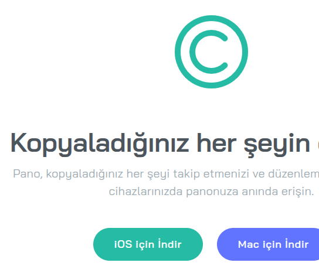
Pano Açılış Sayfası Tasarımı
Projenin Amacı : Bir ürünün özelliklerini, kullanım avantajlarını ve sunduğu çözümleri tanıtan modern bir web sayfası tasarlamak.
Kullanılan Teknolojiler : HTML, CSS3 (Flex, Grid)
Görüntülenebilir Cihaz Uyumluluğu : Bilgisayar (Çözünürlük 1024 Pixel ve Üstü)

Yetenekli E-Öğrenme Açılış Sayfası Tasarımı
Projenin Amacı : Çevrim içi eğitim hizmetlerini ve kurs seçeneklerini ziyaretçilere tanıtan bir eğitim platformu açılış sayfası tasarlamak.
Kullanılan Teknolojiler : HTML, CSS3 (Grid)
Görüntülenebilir Cihaz Uyumluluğu : Bilgisayar (Çözünürlük 1024 Pixel ve Üstü)

Sonuç Özeti Uygulama Tasarımı
Projenin Amacı : Kullanıcının farklı kategorilerdeki değerlendirme sonuçlarını ve genel performans özetini kolayca inceleyebilmesini sağlayan bir arayüz tasarlamak.
Kullanılan Teknolojiler : HTML, CSS3 (Flex)
Görüntülenebilir Cihaz Uyumluluğu : Bilgisayar (Çözünürlük 1024 Pixel ve Üstü)
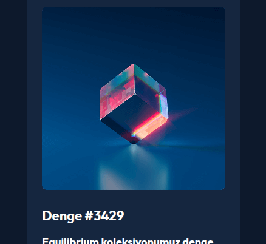
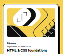
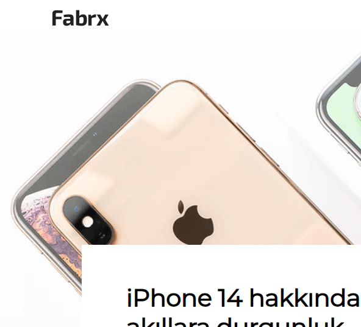
Blog Sitesi Tasarımı
Projenin Amacı : Yazılı içeriklerin ve blog yazılarının düzenli bir şekilde yayınlanmasını ve ziyaretçiler tarafından kolayca incelenmesini sağlayan bir web sitesi tasarlamak.
Kullanılan Teknolojiler : HTML, CSS3 (Flex)
Görüntülenebilir Cihaz Uyumluluğu : Bilgisayar (Çözünürlük 1024 Pixel ve Üstü)


Portfolyo Tasarımı
Projenin Amacı : Kişisel bilgilerin, yetkinliklerin ve çalışmaların ziyaretçilere profesyonel bir şekilde sunulmasını sağlayan bir portfolyo tasarımı hazırlamak.
Kullanılan Teknolojiler : HTML, CSS3 (Temel ve Orta Seviye)
Görüntülenebilir Cihaz Uyumluluğu : Bilgisayar (Çözünürlük 1024 Pixel ve Üstü)

Hero Call to Action Tasarımı
Projenin Amacı : Ziyaretçilerin dikkatini çekerek belirli bir hizmet veya ürün hakkında bilgi almalarını ve ilgili işlemi gerçekleştirmelerini teşvik eden bir tanıtım alanı tasarlamak.
Kullanılan Teknolojiler : HTML, CSS3 (Temel ve Orta Seviye)
Görüntülenebilir Cihaz Uyumluluğu : Bilgisayar (Çözünürlük 1024 Pixel ve Üstü)

Hero Banner Tasarımı
Projenin Amacı : Bir web sitesinde ürün, hizmet veya kampanya tanıtımını görsel ve metinlerle öne çıkaran bir banner tasarlamak.
Kullanılan Teknolojiler : HTML, CSS3 (Temel ve Orta Seviye)
Görüntülenebilir Cihaz Uyumluluğu : Bilgisayar (Çözünürlük 1024 Pixel ve Üstü)

Hero Restaurant Tasarımı
Projenin Amacı : Bir restoranın ürünlerini, kampanyalarını ve sunduğu hizmetleri ziyaretçilere tanıtan bir web sayfası tasarlamak.
Kullanılan Teknolojiler : HTML, CSS3 (Temel ve Orta Seviye)
Görüntülenebilir Cihaz Uyumluluğu : Bilgisayar (Çözünürlük 1024 Pixel ve Üstü)
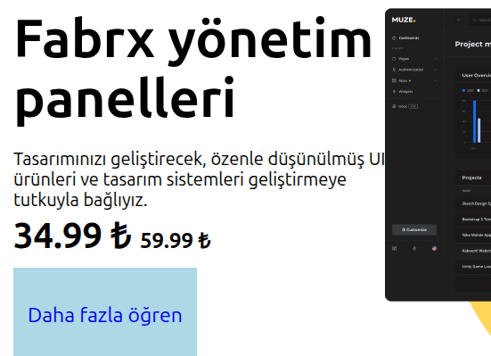
Hero Tasarımı
Projenin Amacı : Bir web sitesinin ilk ekranında ziyaretçiye temel mesajı, görseli ve yönlendirme seçeneklerini sunan bir tanıtım alanı tasarlamak.
Kullanılan Teknolojiler : HTML, CSS3 (Temel ve Orta Seviye)
Görüntülenebilir Cihaz Uyumluluğu : Bilgisayar (Çözünürlük 1024 Pixel ve Üstü)
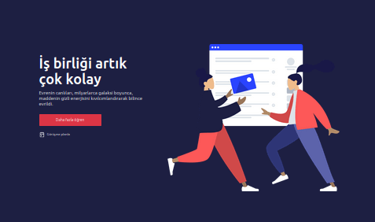

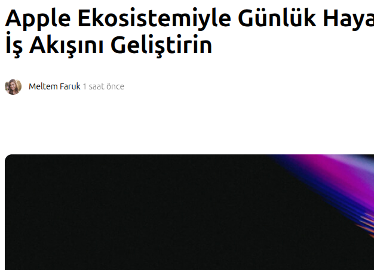
Blog Sayfa Tasarımı
Projenin Amacı : Blog içeriklerinin başlık, görsel ve metinlerle düzenli biçimde sunulmasını sağlayan bir web sayfası tasarlamak.
Kullanılan Teknolojiler : HTML, CSS3 (Temel ve Orta Seviye)
Görüntülenebilir Cihaz Uyumluluğu : Bilgisayar (Çözünürlük 1024 Pixel ve Üstü)
JavaScript Projelerim | Front-End Okulu Eğitim Öncesinde

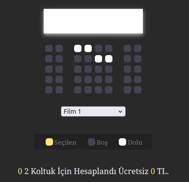
Sinema Bilet Rezervasyon Uygulaması
Projenin Amacı : Kullanıcıların film ve seans bilgilerini inceleyerek koltuk seçimi yapabilmesini ve bilet rezervasyon sürecini deneyimleyebilmesini sağlayan bir uygulama geliştirmek.
Kullanılan Teknolojiler : HTML, CSS3, JavaScript
Görüntülenebilir Cihaz Uyumluluğu : Tüm Cihazlar (Responsive)


Müzik Çalar Uygulaması
Projenin Amacı : Kullanıcıların müzik parçalarını oynatabilmesini, duraklatabilmesini ve müzik dinleme işlemlerini temel oynatma kontrolleriyle yönetebilmesini sağlayan bir uygulama geliştirmek.
Kullanılan Teknolojiler : HTML, CSS3, JavaScript
Görüntülenebilir Cihaz Uyumluluğu : Tüm Cihazlar (Responsive)
HTML Projelerim
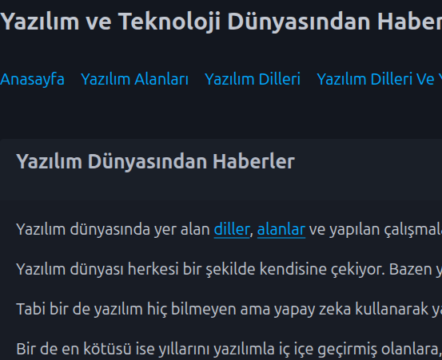
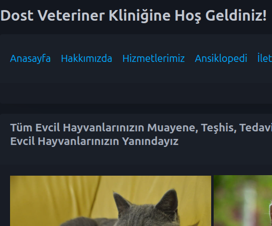
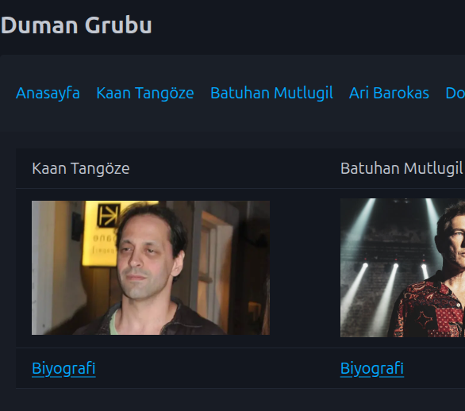
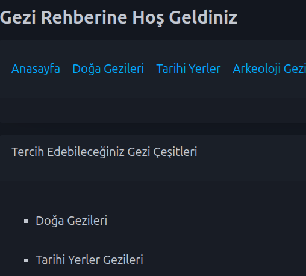